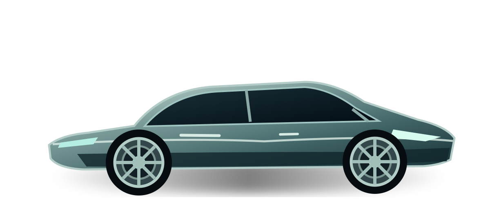

Notre univers.
Plus qu'un nom, Dorodourcalé est une proposition créative : imaginer une marque automobile où l'esthétique et l'émotion donnent le cap.
La naissance de Dorodourcalé.
Dorodourcalé est née d'un exercice d'imagination : que serait une nouvelle marque de voiture créée sans héritage, sans contraintes industrielles et avec la liberté de tout inventer ?
Notre réponse est un univers graphique et narratif consacré à l'automobile. Ses véhicules sont des concepts fictifs : ils permettent de raconter une histoire de design, pas de vendre des voitures qui n'existent pas.
Une identité qui prend la route.
Le nom Dorodourcalé est volontairement singulier. Il incarne l'idée d'une marque mémorable, qui ose la différence et construit sa propre personnalité autour de trois axes : la ligne, l'émotion et l'exploration.
Le design
Des formes sculptées pour créer des silhouettes immédiatement reconnaissables.
Le caractère
Chaque concept possède son propre langage et une façon unique d'imaginer la conduite.
La liberté
Imaginer de nouvelles expériences automobiles, sans oublier le plaisir de rêver.

Fiction assumée. Créativité réelle.
Dorodourcalé n'est pas un constructeur automobile réel. Ce site présente un univers de marque fictive conçu dans le cadre d'un challenge de référencement sur le nom « dorodourcalé ».
Aucun prix, aucune performance technique et aucune disponibilité commerciale ne sont revendiqués pour les modèles présentés.
Voir les trois concepts →Rencontrez nos concepts.
Aura, Veloce et Horizon : trois expressions d'une même idée.
Découvrir les modèles ↗